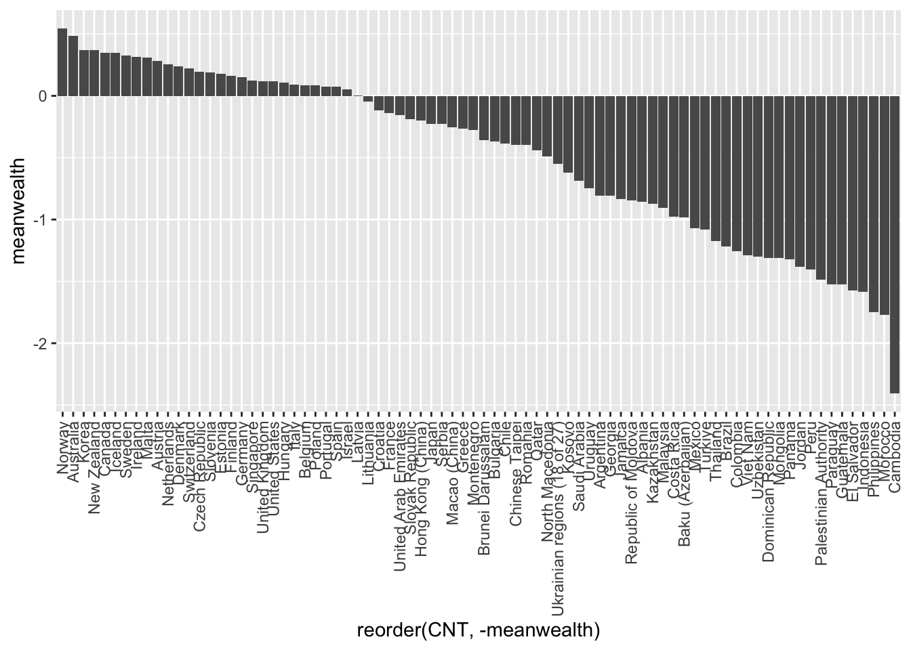
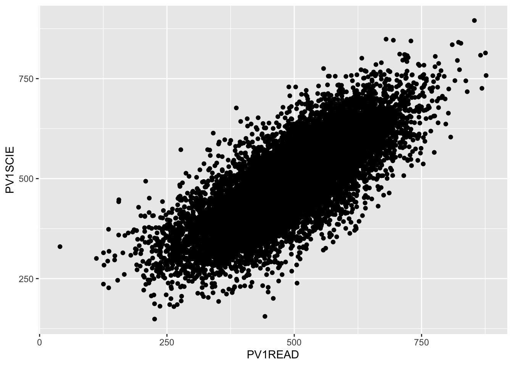
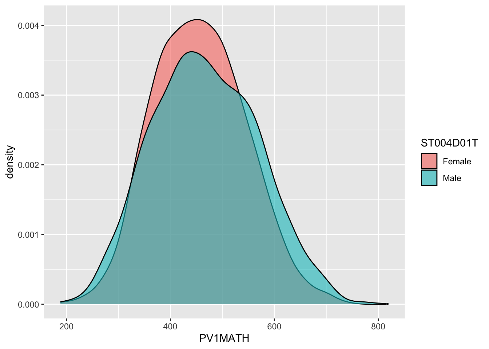
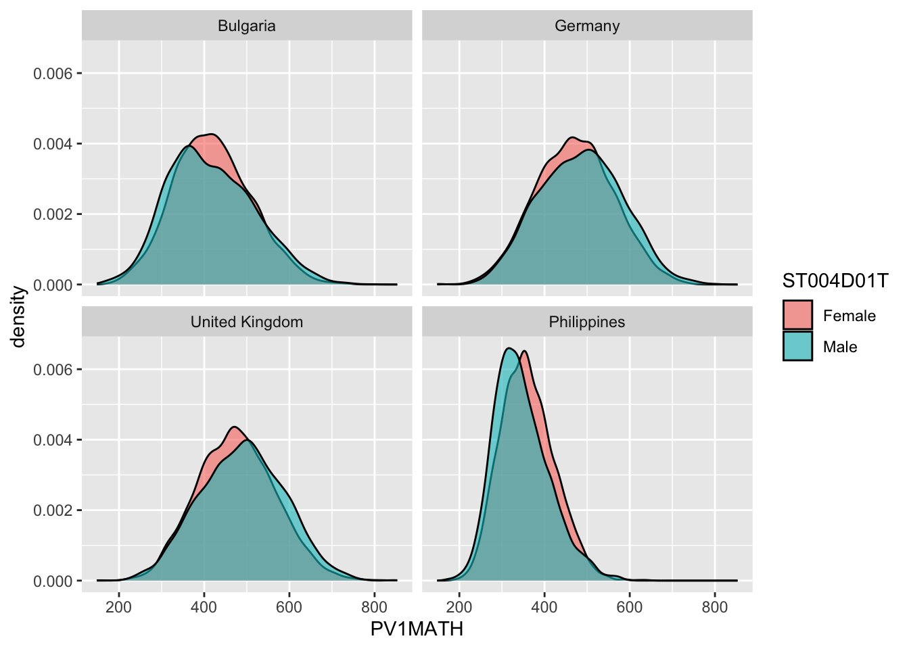
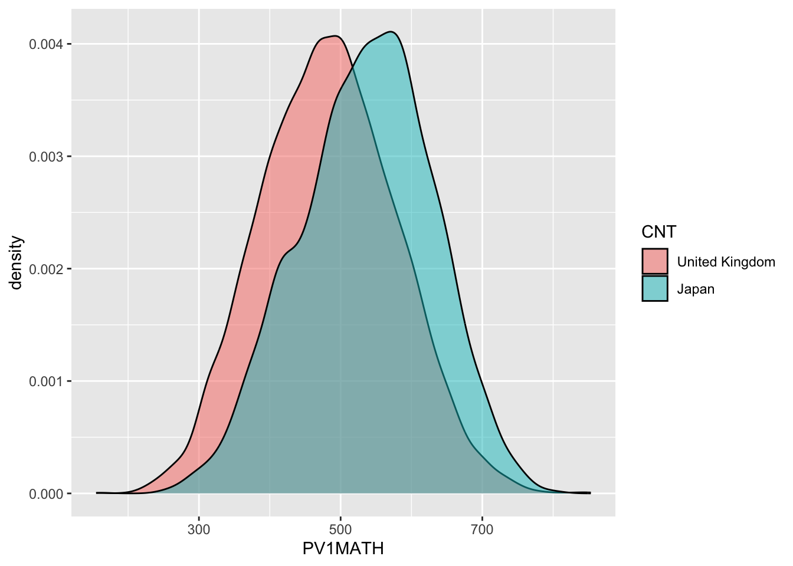
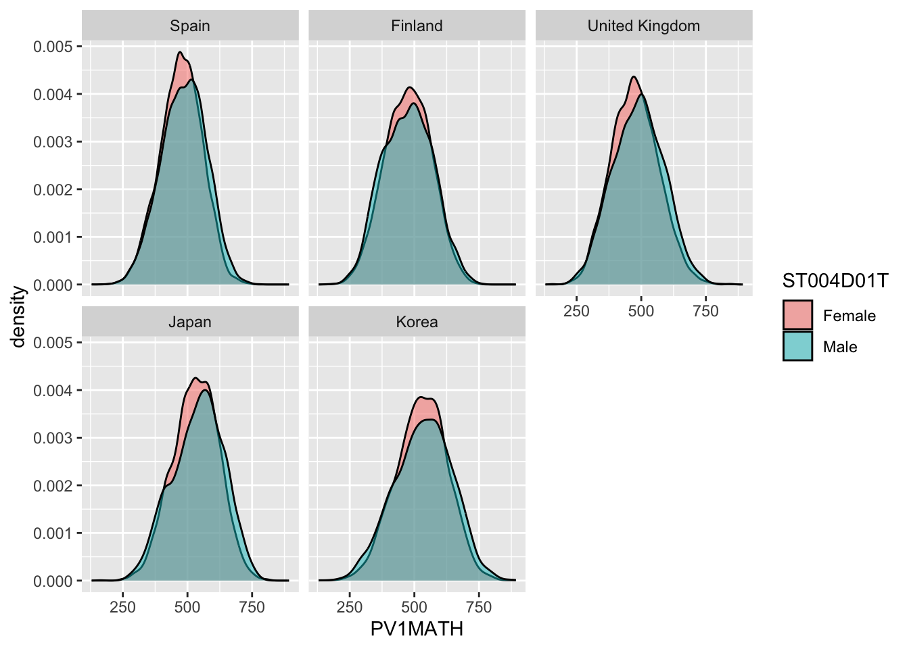
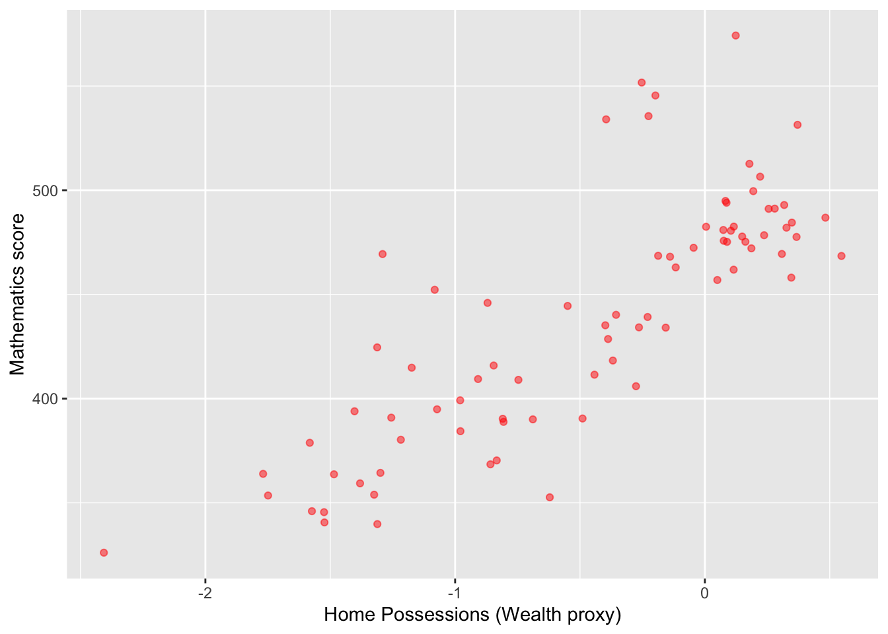
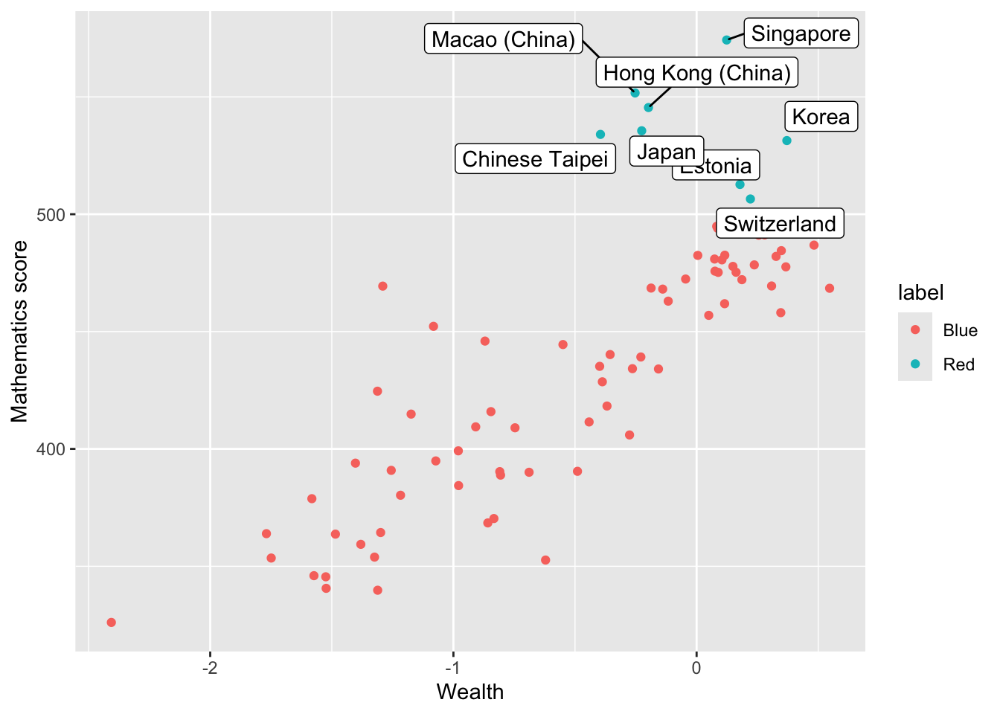
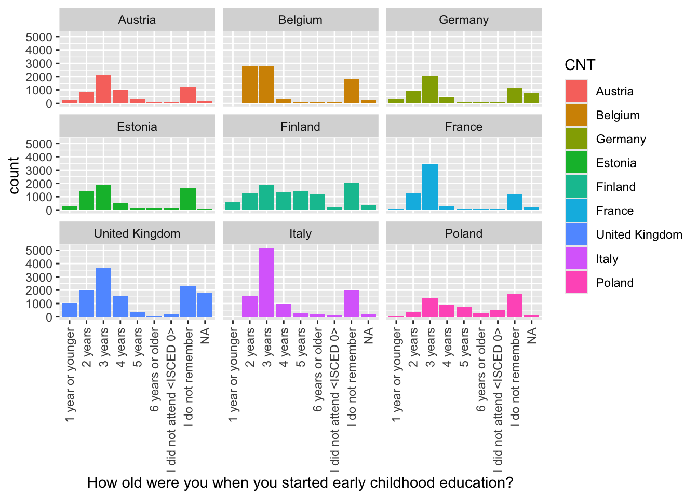
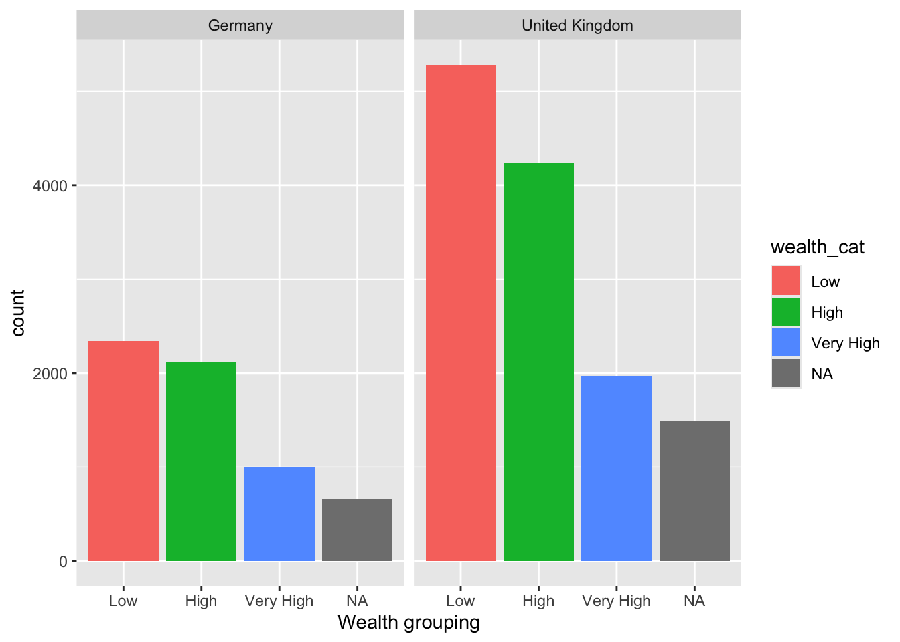

04 Introduction to PISA
1 Introduction to PISA
1.1 Pre-session tasks
1.1.1 Pre-reading
Please read section 1 (“What is PISA?”) of the PISA 2022 Assessment and Analytical Framework: PISA Assessment Framework
1.1.2 Getting set up
Remember to load the PISA 2022 data set
1.2 The PISA assessments
The first International Large-Scale Assessment (ILSA) comparing the learning outcomes of school students between countries was attempted in the 1960s. However, ILSAs only became established and regular in the late 1990s and 2000s.
The Organisation for Economic Co-operation and Development’s (OECD) Programme for International Student Assessment (PISA) has tested 15-year-old students in a range of “literacies” or “competencies” every three years since 2000. There is a rotating focus on reading, mathematics and science, with PISA 2021 focusing on mathematics but delayed by the global pandemic until 2022 and the results only published in December 2023. Until then, PISA 2018, with a focus on reading, was the most recently available cycle and PISA 2015 remains the most recent cycle focusing on science.
In addition to reading, mathematics and science, PISA has tested students on a range of “novel” competencies including problem-solving, global competence, financial literacy, and creative thinking. In addition to these tests, PISA also administers questionnaires to students, teachers and parents to identify “factors” which explain test score differences within and between countries.
Since 2000, more than 90 “countries and economies” and around 3,000,000 students have participated in PISA. The growth in the number of countries participating in each cycle of PISA is reflected in the growth in the number of students taking the PISA tests and responding to the PISA questionnaires, as shown in Table 1.
Table 1: Number of students participating in PISA by year
| Year | Number completing assessment |
|---|---|
| 2000 | 265,000 |
| 2003 | 275,000 |
| 2006 | 400,000 |
| 2009 | 470,000 |
| 2012 | 510,000 |
| 2015 | 540,000 |
| 2018 | 600,000 |
| 2022 | 690,000 |
There is a degree of inherent error in all educational and psychological assessments - and indeed in all social or physical measurement. ILSAs such as PISA may be more prone to error because their comparisons across large and diverse populations make them particularly complex. However, it is particularly important to minimise the error in ILSAs because they influence education policy and practice across a large number of education systems, impacting a vast population of students beyond those sampled for the assessments.
According to the OECD (2019), three sources of error are worth considering. First, sampling error, uncertainty in the degree to which results from the sample generalise to the wider population - in 2018, the OECD average sampling error was 0.4 of a PISA point score (the value was not reported for 2022). Second, measurement error, uncertainty in the extent to which test items measure proficiency. In 2018, the measurement error was around 0.8 of a point in mathematics and science and 0.5 of a score point in reading (the measurement error was not reported for 2022). Third, the link error is the uncertainty in comparison between scores in different years. For comparisons of science scores between 2018 and 2015, the link error is 1.5 points. For 2018-2022, the link errors are reading (1.47), mathematics (2.24) and science (1.61) (OECD 2022, 293)
PISA uses a probabilistic, stratified clustered survey design (Jerrim et al. 2017). However, sampling issues including sample representativeness, non-response rates and population coverage have been identified (Zieger et al. 2022; Rutkowski and Rutkowski 2016; Gillis, Polesel, and Wu 2016; Hopmann, Brinek, and Retzl 2007). Furthermore, Anders et al. (2021) and Jerrim (2021) have shown that assumptions for imputing values (imputing means estimating any missing values based on existing data - for example by adding a mean or mode score for a missing test) for non-participating students used to construct the sample may have significant impacts on achievement scores.
Since PISA 2015, the majority of participating countries have switched from paper-based assessment to computer-based assessment (Jerrim 2016). A randomised controlled trial conducted by the OECD prior to the switch indicated a difference in score between the two modes of delivery. The OECD introduced an adjustment to compensate for this difference, but it is not entirely removed by the adjustment Jerrim et al. (2018), with implications for any time series comparisons between PISA cycles. Nonetheless, Jerrim (2016) notes that “in terms of cross-country rankings, there remains a high degree of consistency… the vast majority of countries are simply ‘shifted’ by a uniform amount” (pp. 508-509).
In summary, comparisons within and between countries and comparisons over time using ILSAs need careful interpretations that bear in mind the specific design of each ILSA. In practice, this means considering a range of potential explanations for score differences. Does a difference in science ranking between two countries simply reflect sampling error? Does the same parental occupation or home possessions amount to the same economic, social and cultural status in different countries (e.g. the social status of a parent as a teacher or the economic status of the number of cars a family owns)? Does a difference in mathematical self-efficacy (i.e. student self-confidence in mathematics) between the USA and Japan reflect sociocultural differences in self-enhancement and modesty, respectively? How do score differences between boys and girls indicate gender inequalities in education that reflect wider society?
For useful critique and discussion of the construction of the measure of socio-economic status in PISA data see: Avvisati’s (2020) paper.
1.3 A reminder about summarising data, graphing and categorising
1.3.1 Summarising data
Recall you can use group_by and summarise to group individual student measures and find means and standard deviations for countries. For example, to find the mean wealth scores for the countries, and rank in descending order, we first select the variables of interest CNT and HOMEPOS (home possessions, a proxy for wealth), then group_by CNT and summarise to get the mean. As there are some NA values, we need to include na.rm=TRUE to tell summarise to ignore the missing values. Finally, we arrange in descending order by the new variable we create meanwealth. We can do the same and add a calculation to get the standard deviation.
# Create a data frame of PISA 2022 data of country mean wealth
PISA2022WealthRank <- PISA_2022 %>%
2 select(CNT, HOMEPOS) %>%
3 group_by(CNT) %>%
4 summarise(meanwealth = mean(HOMEPOS, na.rm = TRUE)) %>%
5 arrange(desc(meanwealth))
PISA2022WealthRank
# With standard deviations
PISA2022WealthRank <- PISA_2022 %>%
select(CNT, HOMEPOS) %>%
group_by(CNT) %>%
summarise(meanwealth = mean(HOMEPOS, na.rm = TRUE),
sdwealth=sd(HOMEPOS, na.rm = TRUE)) %>%
arrange(desc(meanwealth))
PISA2022WealthRank- 2
- line 2 - select the variables of interest
- 3
-
line 3 - treat the data as grouped by country (
group_by(CNT)) - 4
-
line 4 - summarise to calculate the mean score of
HOMEPOSin a new columnmeanwealth, settingna.rm=TRUEto ignore NA values - 5
-
line 5 - arrange in descending order by
meanwealth
# A tibble: 80 × 2
CNT meanwealth
<fct> <dbl>
1 Norway 0.547
2 Australia 0.483
3 Korea 0.371
4 New Zealand 0.367
5 Canada 0.348
6 Iceland 0.346
7 Sweden 0.327
8 Ireland 0.318
9 Malta 0.308
10 Austria 0.280
11 Netherlands 0.255
12 Denmark 0.237
13 Switzerland 0.221
14 Czech Republic 0.194
15 Slovenia 0.186
16 Estonia 0.178
17 Finland 0.162
18 Germany 0.149
19 Singapore 0.124
20 United Kingdom 0.116
21 United States 0.115
22 Hungary 0.104
23 Italy 0.0887
24 Belgium 0.0866
25 Poland 0.0825
26 Portugal 0.0755
27 Spain 0.0739
28 Israel 0.0499
29 Latvia 0.00480
30 Lithuania -0.0451
31 Croatia -0.117
32 France -0.139
33 United Arab Emirates -0.157
34 Slovak Republic -0.187
35 Hong Kong (China) -0.198
36 Japan -0.226
37 Serbia -0.229
38 Macao (China) -0.253
39 Greece -0.264
40 Montenegro -0.276
41 Brunei Darussalam -0.356
42 Bulgaria -0.368
43 Chile -0.388
44 Chinese Taipei -0.395
45 Romania -0.399
46 Qatar -0.442
47 North Macedonia -0.490
48 Ukrainian regions (18 of 27) -0.550
49 Kosovo -0.621
50 Saudi Arabia -0.689
51 Uruguay -0.747
52 Argentina -0.806
53 Georgia -0.809
54 Jamaica -0.834
55 Republic of Moldova -0.846
56 Albania -0.859
57 Kazakhstan -0.870
58 Malaysia -0.908
59 Costa Rica -0.979
60 Baku (Azerbaijan) -0.980
61 Mexico -1.07
62 Türkiye -1.08
63 Thailand -1.17
64 Brazil -1.22
65 Colombia -1.26
66 Viet Nam -1.29
67 Uzbekistan -1.30
68 Dominican Republic -1.31
69 Mongolia -1.31
70 Panama -1.32
71 Jordan -1.38
72 Peru -1.40
73 Palestinian Authority -1.49
74 Paraguay -1.52
75 Guatemala -1.52
76 El Salvador -1.57
77 Indonesia -1.58
78 Philippines -1.75
79 Morocco -1.77
80 Cambodia -2.41
# A tibble: 80 × 3
CNT meanwealth sdwealth
<fct> <dbl> <dbl>
1 Norway 0.547 0.970
2 Australia 0.483 0.861
3 Korea 0.371 1.01
4 New Zealand 0.367 0.862
5 Canada 0.348 0.867
6 Iceland 0.346 0.805
7 Sweden 0.327 0.878
8 Ireland 0.318 0.818
9 Malta 0.308 0.857
10 Austria 0.280 0.938
11 Netherlands 0.255 0.802
12 Denmark 0.237 0.815
13 Switzerland 0.221 0.895
14 Czech Republic 0.194 0.852
15 Slovenia 0.186 0.833
16 Estonia 0.178 0.740
17 Finland 0.162 0.862
18 Germany 0.149 0.946
19 Singapore 0.124 0.840
20 United Kingdom 0.116 0.919
21 United States 0.115 0.927
22 Hungary 0.104 0.914
23 Italy 0.0887 0.803
24 Belgium 0.0866 0.869
25 Poland 0.0825 0.794
26 Portugal 0.0755 0.901
27 Spain 0.0739 0.805
28 Israel 0.0499 1.03
29 Latvia 0.00480 0.774
30 Lithuania -0.0451 0.832
31 Croatia -0.117 0.719
32 France -0.139 0.972
33 United Arab Emirates -0.157 1.04
34 Slovak Republic -0.187 0.990
35 Hong Kong (China) -0.198 0.881
36 Japan -0.226 0.761
37 Serbia -0.229 0.768
38 Macao (China) -0.253 0.845
39 Greece -0.264 0.820
40 Montenegro -0.276 0.917
41 Brunei Darussalam -0.356 1.01
42 Bulgaria -0.368 1.04
43 Chile -0.388 0.959
44 Chinese Taipei -0.395 0.985
45 Romania -0.399 0.991
46 Qatar -0.442 1.07
47 North Macedonia -0.490 0.915
48 Ukrainian regions (18 of 27) -0.550 0.785
49 Kosovo -0.621 0.941
50 Saudi Arabia -0.689 1.04
51 Uruguay -0.747 0.924
52 Argentina -0.806 1.01
53 Georgia -0.809 0.972
54 Jamaica -0.834 1.12
55 Republic of Moldova -0.846 0.890
56 Albania -0.859 1.01
57 Kazakhstan -0.870 0.832
58 Malaysia -0.908 0.962
59 Costa Rica -0.979 1.27
60 Baku (Azerbaijan) -0.980 0.971
61 Mexico -1.07 1.00
62 Türkiye -1.08 1.02
63 Thailand -1.17 1.13
64 Brazil -1.22 0.956
65 Colombia -1.26 1.12
66 Viet Nam -1.29 0.922
67 Uzbekistan -1.30 0.960
68 Dominican Republic -1.31 0.977
69 Mongolia -1.31 0.949
70 Panama -1.32 1.21
71 Jordan -1.38 1.18
72 Peru -1.40 1.20
73 Palestinian Authority -1.49 1.25
74 Paraguay -1.52 1.13
75 Guatemala -1.52 1.31
76 El Salvador -1.57 1.08
77 Indonesia -1.58 0.911
78 Philippines -1.75 1.13
79 Morocco -1.77 1.19
80 Cambodia -2.41 1.08 1.3.2 Bar charts
Recall you can use geom_bar to plot a bar graph. For example, if we wanted to plot the PISA2022WealthRank data frame we just created, we pass the data to ggplot. Recall that if you are passing geom_bar the exact values you want to plot, rather than making it count (for example, by including the original dataset with all student entries), you need to specify geom_bar(stat='identity')
I have added +theme(axis.text.x = element_text(angle = 90, vjust = 0.5, hjust=1)) which rotates the text on the x-axis.
- 1
-
line 1 - pass the
PISA2022WealthRanktoggplotand set the x and y variables - 2
-
line 2 - as the data are already summarised, we don’t want
geom_barto count items, but tell it to just plot the data as it is - 3
- line 3 - rotate the x-axis text

We can improve this plot by reordering the x-axis to rank the countries - we switch x=CNT to x=reorder(CNT, -meanwealth) that is we reorder the x axis based on descending (indicated by the minus sign -meanwealth) meanwealth.
# Plot the wealth data frame as a bar graph, reordering the x axis by wealth
1ggplot(PISA2022WealthRank, aes(x=reorder(CNT, -meanwealth), y = meanwealth)) +
geom_bar(stat='identity') +
theme(axis.text.x = element_text(angle = 90, vjust = 0.5, hjust = 1)) - 1
-
line 1 - rather than simply specifying the x axis (e.g.
x=CNT) to change the order of the x-axis by themeanwealthscore we can usex=reorder(CNT, -meanwealth). Note the-beforemeanwealthsets the order is descending.

If you like, you can add colour, tidy up the axis labels, and give a title:
# Plot the wealth data frame as a bar graph, reordering the x axis by wealth
ggplot(PISA2022WealthRank, aes(x = reorder(CNT, -meanwealth),
y = meanwealth)) +
3 geom_bar(stat='identity', fill = "skyblue") +
theme(axis.text.x = element_text(angle = 90, vjust = 0.5, hjust = 1)) +
5 ggtitle("Countries ranked by HOMEPOS") +
6 xlab("Country") +
ylab("Mean HOMEPOS")- 3
-
line 3 - set the bar fill colour to sky blue (
fill = "skyblue") - 5
- line 6 - set the x-axis title
- 6
- line 7 - set the y-axis title
1.3.3 Scatter plots
To plot a scatter plot, recall we use geom_point. For example, to plot reading scores against mathematics scores in the UK we: a) create a data set of reading and science scores after filtering for UK; b) pass the data to ggplot; c) use aes to specify the x and y variables and d) plot with geom_point().

That graph is quite dense, so we can use the alpha function to make the points slightly transparent, size to make them smaller, and set their colour. I will also tidy up the axis names and add a line (note that in: geom_smooth(method = "lm", colour = "black") method = "lm" sets the line to a straight (i.e., linear model, lm) line).
# Create a data.frame of the UK's science and reading scores
UKplot <- PISA_2022 %>%
select(CNT, PV1READ, PV1SCIE) %>%
filter(CNT == "United Kingdom")
# Plot the data on a scatter graph using geom_point
4ggplot(UKplot, aes(x = PV1READ, y = PV1SCIE)) +
5 geom_point(alpha = 0.6, size = 0.1, colour = "red") +
6 xlab("Reading score") +
7 ylab("Science score") +
8 geom_smooth(method = "lm", colour = "black")- 4
- line 4 - set the data to plot and set which variable goes on the x and y axis
- 5
-
line 5 - set the point size (
size=0.1), colour (colour = "red") and opacity (alpha = 0.6) - 6
- line 6 - set the x-axis title
- 7
- line 7 - set the y-axis title
- 8
-
line 8 - plot a straight line (
method = "lm") and set its colour to black

1.3.4 Density plots
An alternative type of plot is the density plot, which is a kind of continuous histogram. The density plot can be useful for visualising the achievement scores of students. For example, the mathematics scores of girls and boys (recall the gender variable is ST004D01T) in the US. We use na.omit to omit NAs. Notice, for the plot, I use aes to set my x variable, and then specify that the plot should fill by gender (fill=ST004D01T). Finally, in geom_density(alpha=0.6) I set the alpha to 0.6 to make the fill areas partially transparent.
The y-axis on a density plot is chosen so that the total area under the graph adds up to 1
# Create a data.frame of US Math data including gender
USMathplot <- PISA_2022 %>%
select(CNT, PV1MATH, ST004D01T) %>%
filter(CNT == "United States") %>%
na.omit()
# PLot a density chart, seeting the fill by gender, and setting the opacity to
# 0.6 to show both gender plots
ggplot(USMathplot, aes(x = PV1MATH, fill = ST004D01T)) +
geom_density(alpha = 0.6)
1.3.5 Facet wrapping - producing the same graph for multiple countries.
A powerful feature of ggplot is being able to produce the same graph for multiple values of a variable, for example, for multiple countries. For example, we may want to produce the density graph of PV1MATH score by gender, for several countries in the data set. To do that, we produce a data set of PV1MATH scores, and gender (ST004D01T) and filter for four countries (Philippines, UK, Bulgaria and Germany). We use the same code as above to plot the graphs but add +facet_wrap(.~CNT) - facet_wrap tells ggplot to produce a multi-panel plot and .~CNT means do the same as above (the . means, as above), but vary across countries (~CNT).
# Create a data.frame of the maths scores for the 4 countries
Mathplot <- PISA_2022 %>%
select(CNT, PV1MATH, ST004D01T) %>%
filter(CNT == "Philippines"|CNT == "United Kingdom"|CNT == "Bulgaria" |
CNT == "Germany")
# Plot the data, changing colour by gender, and faceting for the countries
5ggplot(Mathplot, aes(x = PV1MATH, fill = ST004D01T)) +
6 geom_density(alpha = 0.6) +
7 facet_wrap(. ~ CNT)- 5
-
line 5 - pass the data to plot
Mathplotand set the x axis (no y is needed for ageom_densityplot) - set that we want two series, with the colour set by gender (ST004D01T) - 6
-
line 6 - set fill (
alpha = 0.6) so both gender plots are visible where they overlap - 7
-
line 7 -
facet_wraprepeats the initial graph for some variable. In this case we specify we want the same graph as above (.) but we want to produce versions for each country (~CNT) to givefacet_wrap(. ~ CNT)

1.3.6 Categorising responses
A useful analytical choice is to categorise some a numerical variable into ordinal classes. For example, rather than treating HOMEPOS as a continuous scale, you might want to split into high and low wealth groups (for example, those above and below the mean value).
To do this, first calculate the mean mean(HOMEPOS). Then we add a new vector, which we will call wealthclass using the mutate function. We set the value of wealthclass using case_when. If HOMEPOS is more than the mean score, we set wealthclass to High, and if it is less than the mean, we set it to Low. We do that using mutate(wealthclass = case_when(HOMEPOS > mean(HOMEPOS, na.rm =TRUE) ~ "High", HOMEPOS < mean(HOMEPOS, na.rm =TRUE) ~ "Low", .default = NA)). This means that in the case when HOMEPOS is more than the mean (note the na.rm =TRUE to remove missing values) the value of the new column wealthclass is set to High. When HOMEPOS is less than mean(HOMEPOS, na.rm =TRUE), weatlthclass is set to Low. The .default sets what to return if neither of those conditions are met.
For example, create a data frame of UK participants HOMEPOS sorted into HIGH and LOW categories.
# Create a data frame of UK responses
UKPISA2022 <- PISA_2022 %>%
select(CNT, HOMEPOS) %>%
filter(CNT == "United Kingdom") %>%
4 mutate(wealthclass = case_when(HOMEPOS > mean(HOMEPOS, na.rm =TRUE) ~ "High",
HOMEPOS < mean(HOMEPOS, na.rm =TRUE) ~ "Low",
.default = NA))
UKPISA2022- 4
-
line 4 - mutate to create a new column
wealthclass- if HOMEPOS is more than mean(HOMEPOS), set the column to “High” otherwise set it to “Low”
# A tibble: 12,972 × 3
CNT HOMEPOS wealthclass
<fct> <dbl> <chr>
1 United Kingdom -1.09 Low
2 United Kingdom -0.418 Low
3 United Kingdom 1.13 High
4 United Kingdom -0.829 Low
5 United Kingdom -0.274 Low
6 United Kingdom NA <NA>
7 United Kingdom -0.606 Low
8 United Kingdom NA <NA>
9 United Kingdom 0.425 High
10 United Kingdom 0.998 High
11 United Kingdom 1.73 High
12 United Kingdom -1.20 Low
13 United Kingdom 1.81 High
14 United Kingdom NA <NA>
15 United Kingdom -0.452 Low
16 United Kingdom -0.626 Low
17 United Kingdom -0.171 Low
18 United Kingdom 1.40 High
19 United Kingdom -0.720 Low
20 United Kingdom -0.930 Low
21 United Kingdom -0.517 Low
22 United Kingdom -0.840 Low
23 United Kingdom -0.741 Low
24 United Kingdom -1.66 Low
25 United Kingdom 0.42 High
26 United Kingdom -0.637 Low
27 United Kingdom 1.94 High
28 United Kingdom NA <NA>
29 United Kingdom 0.964 High
30 United Kingdom -0.259 Low
31 United Kingdom -0.599 Low
32 United Kingdom -0.088 Low
33 United Kingdom 0.553 High
34 United Kingdom -0.168 Low
35 United Kingdom 0.158 High
36 United Kingdom 1.28 High
37 United Kingdom -0.312 Low
38 United Kingdom -0.434 Low
39 United Kingdom 0.420 High
40 United Kingdom 0.149 High
41 United Kingdom 0.855 High
42 United Kingdom -0.700 Low
43 United Kingdom 0.606 High
44 United Kingdom 0.233 High
45 United Kingdom -0.518 Low
46 United Kingdom 0.0376 Low
47 United Kingdom 1.50 High
48 United Kingdom NA <NA>
49 United Kingdom 0.488 High
50 United Kingdom -0.266 Low
51 United Kingdom -0.0388 Low
52 United Kingdom NA <NA>
53 United Kingdom -1.28 Low
54 United Kingdom 0.473 High
55 United Kingdom 0.415 High
56 United Kingdom 0.831 High
57 United Kingdom 0.033 Low
58 United Kingdom -0.190 Low
59 United Kingdom -0.885 Low
60 United Kingdom 2.75 High
61 United Kingdom 0.323 High
62 United Kingdom 1.62 High
63 United Kingdom 0.861 High
64 United Kingdom 1.20 High
65 United Kingdom -0.332 Low
66 United Kingdom NA <NA>
67 United Kingdom -0.0787 Low
68 United Kingdom -0.414 Low
69 United Kingdom 0.243 High
70 United Kingdom -1.01 Low
71 United Kingdom -0.910 Low
72 United Kingdom NA <NA>
73 United Kingdom NA <NA>
74 United Kingdom 0.866 High
75 United Kingdom -0.481 Low
76 United Kingdom 1.22 High
77 United Kingdom 0.921 High
78 United Kingdom 1.56 High
79 United Kingdom NA <NA>
80 United Kingdom NA <NA>
81 United Kingdom -0.168 Low
82 United Kingdom -0.137 Low
83 United Kingdom -0.0073 Low
84 United Kingdom -1.35 Low
85 United Kingdom -0.656 Low
86 United Kingdom 1.09 High
87 United Kingdom 0.131 High
88 United Kingdom 0.806 High
89 United Kingdom -0.508 Low
90 United Kingdom 2.08 High
91 United Kingdom 1.10 High
92 United Kingdom NA <NA>
93 United Kingdom 0.870 High
94 United Kingdom NA <NA>
95 United Kingdom -0.392 Low
96 United Kingdom NA <NA>
97 United Kingdom 0.781 High
98 United Kingdom -0.765 Low
99 United Kingdom -0.680 Low
100 United Kingdom -0.505 Low
101 United Kingdom 0.124 High
102 United Kingdom NA <NA>
103 United Kingdom 1.67 High
104 United Kingdom -0.468 Low
105 United Kingdom -0.266 Low
106 United Kingdom NA <NA>
107 United Kingdom 0.609 High
108 United Kingdom -1.34 Low
109 United Kingdom 0.422 High
110 United Kingdom 0.732 High
111 United Kingdom -0.119 Low
112 United Kingdom 1.04 High
113 United Kingdom 1.27 High
114 United Kingdom -0.408 Low
115 United Kingdom 1.12 High
116 United Kingdom -0.652 Low
117 United Kingdom 0.130 High
118 United Kingdom -0.888 Low
119 United Kingdom -0.219 Low
120 United Kingdom 0.884 High
121 United Kingdom 0.682 High
122 United Kingdom 1.02 High
123 United Kingdom NA <NA>
124 United Kingdom 1.21 High
125 United Kingdom -0.452 Low
126 United Kingdom -1.06 Low
127 United Kingdom 0.230 High
128 United Kingdom 0.594 High
129 United Kingdom 0.837 High
130 United Kingdom -0.455 Low
131 United Kingdom -0.608 Low
132 United Kingdom -0.367 Low
133 United Kingdom -1.44 Low
134 United Kingdom 0.356 High
135 United Kingdom NA <NA>
136 United Kingdom -1.44 Low
137 United Kingdom 0.800 High
138 United Kingdom 1.12 High
139 United Kingdom -0.121 Low
140 United Kingdom -0.862 Low
141 United Kingdom 0.357 High
142 United Kingdom 0.0831 Low
143 United Kingdom -0.754 Low
144 United Kingdom 1.68 High
145 United Kingdom 0.608 High
146 United Kingdom -0.184 Low
147 United Kingdom -0.431 Low
148 United Kingdom -1.32 Low
149 United Kingdom 1.21 High
150 United Kingdom -0.0912 Low
151 United Kingdom -0.0866 Low
152 United Kingdom 0.818 High
153 United Kingdom 0.764 High
154 United Kingdom -0.111 Low
155 United Kingdom 1.45 High
156 United Kingdom -0.936 Low
157 United Kingdom 1.56 High
158 United Kingdom -0.0655 Low
159 United Kingdom 0.163 High
160 United Kingdom -0.0348 Low
161 United Kingdom 0.672 High
162 United Kingdom NA <NA>
163 United Kingdom 0.799 High
164 United Kingdom -0.0587 Low
165 United Kingdom -1.14 Low
166 United Kingdom -0.991 Low
167 United Kingdom -0.468 Low
168 United Kingdom NA <NA>
169 United Kingdom -1.15 Low
170 United Kingdom 0.0185 Low
171 United Kingdom 1.87 High
172 United Kingdom 1.61 High
173 United Kingdom NA <NA>
174 United Kingdom 0.553 High
175 United Kingdom 1.38 High
176 United Kingdom 1.65 High
177 United Kingdom 1.31 High
178 United Kingdom -2.19 Low
179 United Kingdom -1.39 Low
180 United Kingdom 0.461 High
181 United Kingdom -1.28 Low
182 United Kingdom -0.0547 Low
183 United Kingdom 1.35 High
184 United Kingdom -0.285 Low
185 United Kingdom -0.558 Low
186 United Kingdom 0.165 High
187 United Kingdom 0.0727 Low
188 United Kingdom 0.380 High
189 United Kingdom 0.832 High
190 United Kingdom 0.306 High
191 United Kingdom 0.475 High
192 United Kingdom -0.0706 Low
193 United Kingdom 1.24 High
194 United Kingdom -1.42 Low
195 United Kingdom 0.0354 Low
196 United Kingdom -0.311 Low
197 United Kingdom 0.234 High
198 United Kingdom -0.838 Low
199 United Kingdom -1.17 Low
200 United Kingdom NA <NA>
201 United Kingdom -0.303 Low
202 United Kingdom 0.927 High
203 United Kingdom 0.257 High
204 United Kingdom 0.281 High
205 United Kingdom 0.903 High
206 United Kingdom 1.17 High
207 United Kingdom -1.14 Low
208 United Kingdom 1.16 High
209 United Kingdom 0.768 High
210 United Kingdom -0.0763 Low
211 United Kingdom 0.337 High
212 United Kingdom -0.324 Low
213 United Kingdom 0.435 High
214 United Kingdom -0.592 Low
215 United Kingdom 0.167 High
216 United Kingdom NA <NA>
217 United Kingdom -1.37 Low
218 United Kingdom -0.238 Low
219 United Kingdom NA <NA>
220 United Kingdom 0.202 High
221 United Kingdom -0.623 Low
222 United Kingdom -1.01 Low
223 United Kingdom -1.42 Low
224 United Kingdom -0.487 Low
225 United Kingdom 0.0919 Low
226 United Kingdom 1.91 High
227 United Kingdom 0.368 High
228 United Kingdom NA <NA>
229 United Kingdom 0.0909 Low
230 United Kingdom -1.50 Low
231 United Kingdom 0.161 High
232 United Kingdom NA <NA>
233 United Kingdom -0.818 Low
234 United Kingdom 1.33 High
235 United Kingdom -1.01 Low
236 United Kingdom -0.671 Low
237 United Kingdom -0.161 Low
238 United Kingdom -0.0321 Low
239 United Kingdom NA <NA>
240 United Kingdom -0.340 Low
241 United Kingdom -0.426 Low
242 United Kingdom 0.0556 Low
243 United Kingdom -0.436 Low
244 United Kingdom 0.524 High
245 United Kingdom NA <NA>
246 United Kingdom -1.12 Low
247 United Kingdom NA <NA>
248 United Kingdom -0.394 Low
249 United Kingdom -0.202 Low
250 United Kingdom 1.29 High
251 United Kingdom -0.810 Low
252 United Kingdom -0.782 Low
253 United Kingdom 0.632 High
254 United Kingdom NA <NA>
255 United Kingdom -0.576 Low
256 United Kingdom 1.08 High
257 United Kingdom 0.795 High
258 United Kingdom NA <NA>
259 United Kingdom 0.991 High
260 United Kingdom NA <NA>
261 United Kingdom 0.400 High
262 United Kingdom 0.243 High
263 United Kingdom -1.31 Low
264 United Kingdom -0.614 Low
265 United Kingdom 0.533 High
266 United Kingdom 0.0851 Low
267 United Kingdom 0.257 High
268 United Kingdom -0.746 Low
269 United Kingdom 0.818 High
270 United Kingdom 0.0313 Low
271 United Kingdom 0.418 High
272 United Kingdom 0.526 High
273 United Kingdom 1.66 High
274 United Kingdom 0.788 High
275 United Kingdom 0.0385 Low
276 United Kingdom -0.163 Low
277 United Kingdom -1.19 Low
278 United Kingdom 0.0895 Low
279 United Kingdom -0.765 Low
280 United Kingdom -1.27 Low
281 United Kingdom 0.0851 Low
282 United Kingdom 0.834 High
283 United Kingdom 1.02 High
284 United Kingdom -0.779 Low
285 United Kingdom -0.268 Low
286 United Kingdom 0.221 High
287 United Kingdom 0.160 High
288 United Kingdom 0.111 Low
289 United Kingdom 0.920 High
290 United Kingdom NA <NA>
291 United Kingdom 1.49 High
292 United Kingdom -0.748 Low
293 United Kingdom -0.0714 Low
294 United Kingdom NA <NA>
295 United Kingdom 0.197 High
296 United Kingdom 1.47 High
297 United Kingdom 1.25 High
298 United Kingdom -1.14 Low
299 United Kingdom NA <NA>
300 United Kingdom 0.320 High
301 United Kingdom -0.204 Low
302 United Kingdom 0.179 High
303 United Kingdom 1.94 High
304 United Kingdom NA <NA>
305 United Kingdom 0.350 High
306 United Kingdom -0.842 Low
307 United Kingdom 0.308 High
308 United Kingdom -0.722 Low
309 United Kingdom NA <NA>
310 United Kingdom -0.809 Low
311 United Kingdom -0.0455 Low
312 United Kingdom 1.14 High
313 United Kingdom 0.161 High
314 United Kingdom -0.858 Low
315 United Kingdom 0.128 High
316 United Kingdom -0.610 Low
317 United Kingdom 0.513 High
318 United Kingdom NA <NA>
319 United Kingdom -0.227 Low
320 United Kingdom 1.20 High
321 United Kingdom -0.762 Low
322 United Kingdom -1.91 Low
323 United Kingdom NA <NA>
324 United Kingdom -0.300 Low
325 United Kingdom 1.21 High
326 United Kingdom NA <NA>
327 United Kingdom 1.21 High
328 United Kingdom -0.368 Low
329 United Kingdom 0.712 High
330 United Kingdom 0.908 High
331 United Kingdom NA <NA>
332 United Kingdom NA <NA>
333 United Kingdom -0.530 Low
334 United Kingdom -1.22 Low
335 United Kingdom NA <NA>
336 United Kingdom -0.510 Low
337 United Kingdom -0.511 Low
338 United Kingdom NA <NA>
339 United Kingdom NA <NA>
340 United Kingdom 0.728 High
341 United Kingdom 0.993 High
342 United Kingdom -1.33 Low
343 United Kingdom -0.743 Low
344 United Kingdom -0.238 Low
345 United Kingdom 1.85 High
346 United Kingdom 0.931 High
347 United Kingdom NA <NA>
348 United Kingdom 0.563 High
349 United Kingdom 0.0552 Low
350 United Kingdom -0.901 Low
351 United Kingdom NA <NA>
352 United Kingdom NA <NA>
353 United Kingdom NA <NA>
354 United Kingdom NA <NA>
355 United Kingdom -0.0691 Low
356 United Kingdom NA <NA>
357 United Kingdom 0.705 High
358 United Kingdom -0.087 Low
359 United Kingdom 0.488 High
360 United Kingdom -0.887 Low
361 United Kingdom 1.32 High
362 United Kingdom 0.840 High
363 United Kingdom -0.972 Low
364 United Kingdom -0.581 Low
365 United Kingdom 0.383 High
366 United Kingdom -0.202 Low
367 United Kingdom 0.600 High
368 United Kingdom 0.256 High
369 United Kingdom -1.19 Low
370 United Kingdom 1.13 High
371 United Kingdom 0.246 High
372 United Kingdom 2.65 High
373 United Kingdom -0.517 Low
374 United Kingdom 0.500 High
375 United Kingdom 0.252 High
376 United Kingdom 0.301 High
377 United Kingdom -0.719 Low
378 United Kingdom 0.227 High
379 United Kingdom -0.114 Low
380 United Kingdom 0.105 Low
381 United Kingdom 0.0123 Low
382 United Kingdom -1.17 Low
383 United Kingdom NA <NA>
384 United Kingdom 0.217 High
385 United Kingdom 0.348 High
386 United Kingdom 0.559 High
387 United Kingdom -0.0607 Low
388 United Kingdom NA <NA>
389 United Kingdom NA <NA>
390 United Kingdom 0.355 High
391 United Kingdom -0.621 Low
392 United Kingdom 0.121 High
393 United Kingdom 0.765 High
394 United Kingdom 0.0722 Low
395 United Kingdom -0.795 Low
396 United Kingdom -0.439 Low
397 United Kingdom -1.44 Low
398 United Kingdom -0.0748 Low
399 United Kingdom -0.514 Low
400 United Kingdom 2.14 High
401 United Kingdom -1.23 Low
402 United Kingdom 0.297 High
403 United Kingdom 0.704 High
404 United Kingdom 0.336 High
405 United Kingdom -1.00 Low
406 United Kingdom 1.12 High
407 United Kingdom 0.407 High
408 United Kingdom 1.10 High
409 United Kingdom -0.366 Low
410 United Kingdom NA <NA>
411 United Kingdom 1.82 High
412 United Kingdom 1.68 High
413 United Kingdom 1.05 High
414 United Kingdom -0.0146 Low
415 United Kingdom 0.406 High
416 United Kingdom -0.428 Low
417 United Kingdom 0.264 High
418 United Kingdom -0.584 Low
419 United Kingdom -0.932 Low
420 United Kingdom -0.972 Low
421 United Kingdom 0.671 High
422 United Kingdom -0.0961 Low
423 United Kingdom 0.562 High
424 United Kingdom 2.07 High
425 United Kingdom 0.328 High
426 United Kingdom -0.420 Low
427 United Kingdom -0.682 Low
428 United Kingdom 1.23 High
429 United Kingdom NA <NA>
430 United Kingdom -0.111 Low
431 United Kingdom -1.35 Low
432 United Kingdom 0.335 High
433 United Kingdom -1.17 Low
434 United Kingdom 0.334 High
435 United Kingdom 0.777 High
436 United Kingdom 0.531 High
437 United Kingdom 0.394 High
438 United Kingdom 1.28 High
439 United Kingdom -0.849 Low
440 United Kingdom 0.952 High
441 United Kingdom 1.66 High
442 United Kingdom 0.0159 Low
443 United Kingdom -0.660 Low
444 United Kingdom 0.595 High
445 United Kingdom -0.425 Low
446 United Kingdom -1.93 Low
447 United Kingdom -0.501 Low
448 United Kingdom -0.761 Low
449 United Kingdom 0.513 High
450 United Kingdom NA <NA>
451 United Kingdom 1.05 High
452 United Kingdom -0.758 Low
453 United Kingdom -0.451 Low
454 United Kingdom -0.249 Low
455 United Kingdom -0.485 Low
456 United Kingdom 1.18 High
457 United Kingdom NA <NA>
458 United Kingdom -0.0599 Low
459 United Kingdom -0.817 Low
460 United Kingdom -0.337 Low
461 United Kingdom NA <NA>
462 United Kingdom -0.122 Low
463 United Kingdom 1.67 High
464 United Kingdom -0.0447 Low
465 United Kingdom -1.15 Low
466 United Kingdom -0.134 Low
467 United Kingdom -0.109 Low
468 United Kingdom -0.393 Low
469 United Kingdom 0.121 High
470 United Kingdom -0.910 Low
471 United Kingdom NA <NA>
472 United Kingdom 0.0138 Low
473 United Kingdom -0.744 Low
474 United Kingdom 1.02 High
475 United Kingdom -0.916 Low
476 United Kingdom -0.0975 Low
477 United Kingdom 0.139 High
478 United Kingdom NA <NA>
479 United Kingdom 0.604 High
480 United Kingdom NA <NA>
481 United Kingdom 0.316 High
482 United Kingdom NA <NA>
483 United Kingdom -0.176 Low
484 United Kingdom -0.491 Low
485 United Kingdom 1.32 High
486 United Kingdom -0.213 Low
487 United Kingdom 0.289 High
488 United Kingdom 1.29 High
489 United Kingdom NA <NA>
490 United Kingdom -0.175 Low
491 United Kingdom -0.0729 Low
492 United Kingdom 2.28 High
493 United Kingdom 0.721 High
494 United Kingdom 0.915 High
495 United Kingdom -0.107 Low
496 United Kingdom 0.173 High
497 United Kingdom -1.39 Low
498 United Kingdom 0.195 High
499 United Kingdom NA <NA>
500 United Kingdom 1.88 High
# ℹ 12,472 more rows1.4 Seminar activities
1.4.1 Task 1 Discussion activity
- Discuss the design features of PISA (for example, sampling, forms of tests etc.) and the sources of error that arise from them.
- As researchers, what issues should we bear in mind when interpreting the data? (Consider, for example, measures of wealth, gender and “competency”)
- What caveats should policy makers bear in mind when making high stakes decisions based on the PISA measures (for example, what to include to curricula, where to target funding)?
Note that the PISA data collection protocol allows countries to exclude up to 5% of the relevant population (see the PISA 2018 technical report (OECD 2018), Annex A2), in particular allowing the exclusion from the data of either individual students by their disability status, or whole schools which provide specialist education (e.g. for blind students). Permitted exclusions include: “intellectual disability, i.e. a mental or emotional disability resulting in the student being so cognitively delayed that he/she could not perform in the PISA testing environment”, and “functional disability, i.e. a moderate to severe permanent physical disability resulting in the student being unable to perform in the PISA testing environment” along with other exclusions.
1.4.2 Task 2 Create a ranked list
Create a ranked list of countries by their mean science scores (PV1SCIE). What are the top five countries for science? Do the same for wealth (HOMEPOS). What patterns do you notice? Why might a researcher be critical of such rankings [Extension: Include the standard deviation of each country (hint: use the sd function) - can you detect any patterns?]
Note that the PISA 2022 links wealth to HOMEPOS (a self reported measure of possessions in the home). You might want to consider the implications of that definition for interpreting the data
Show the answer
# Create a ranked data data frame for science
PISA2022SciRank <- PISA_2022 %>%
select(CNT, PV1SCIE) %>% # Select variables of interest
group_by(CNT) %>% # group by country
summarise(meansci = mean(PV1SCIE)) %>%
# summarise country data to find the mean Sci score
arrange(desc(meansci)) # arrange in descending order based on the meansci score
print(PISA2022SciRank)# A tibble: 80 × 2
CNT meansci
<fct> <dbl>
1 Singapore 561.
2 Japan 546.
3 Macao (China) 543.
4 Korea 531.
5 Estonia 527.
6 Chinese Taipei 527.
7 Hong Kong (China) 525.
8 Czech Republic 511.
9 Australia 508.
10 Poland 505.
11 New Zealand 505.
12 Ireland 504.
13 Switzerland 501.
14 Canada 499.
15 United States 498.
16 Finland 498.
17 Germany 495.
18 Belgium 495.
19 Sweden 494.
20 Austria 494.
21 Spain 493.
22 Latvia 493.
23 United Kingdom 492.
24 Hungary 492.
25 Portugal 488.
26 Slovenia 487.
27 Netherlands 487.
28 Croatia 483.
29 France 481.
30 Italy 481.
31 Denmark 480.
32 Lithuania 480.
33 Norway 479.
34 Türkiye 476.
35 Viet Nam 473.
36 Malta 470.
37 Slovak Republic 467.
38 Israel 464.
39 Chile 463.
40 Ukrainian regions (18 of 27) 454.
41 Iceland 448.
42 Serbia 447.
43 Greece 445.
44 Brunei Darussalam 445.
45 Kazakhstan 441.
46 Romania 436.
47 United Arab Emirates 436.
48 Uruguay 433.
49 Thailand 429.
50 Qatar 429.
51 Bulgaria 422.
52 Colombia 421.
53 Malaysia 417.
54 Republic of Moldova 417.
55 Argentina 415.
56 Mongolia 411.
57 Costa Rica 411.
58 Peru 411.
59 Mexico 411.
60 Brazil 406.
61 Montenegro 405.
62 Jamaica 396.
63 Indonesia 395.
64 Saudi Arabia 390.
65 Georgia 386.
66 Panama 385.
67 North Macedonia 382.
68 Baku (Azerbaijan) 382.
69 Albania 376.
70 El Salvador 375.
71 Jordan 375.
72 Guatemala 375.
73 Paraguay 372.
74 Palestinian Authority 367.
75 Morocco 363.
76 Dominican Republic 362.
77 Uzbekistan 355.
78 Philippines 354.
79 Kosovo 354.
80 Cambodia 340.Show the answer
# And repeat the ranking for wealth
PISA2022WealthRank <- PISA_2022 %>%
select(CNT, HOMEPOS) %>% # Select variables of interest
group_by(CNT) %>% # group by country
summarise(meanwel = mean(HOMEPOS, na.rm=TRUE)) %>%
# summarise country data to find the mean Sci score
arrange(desc(meanwel)) # arrange in descending order based on the meansci score
print(PISA2022WealthRank)# A tibble: 80 × 2
CNT meanwel
<fct> <dbl>
1 Norway 0.547
2 Australia 0.483
3 Korea 0.371
4 New Zealand 0.367
5 Canada 0.348
6 Iceland 0.346
7 Sweden 0.327
8 Ireland 0.318
9 Malta 0.308
10 Austria 0.280
11 Netherlands 0.255
12 Denmark 0.237
13 Switzerland 0.221
14 Czech Republic 0.194
15 Slovenia 0.186
16 Estonia 0.178
17 Finland 0.162
18 Germany 0.149
19 Singapore 0.124
20 United Kingdom 0.116
21 United States 0.115
22 Hungary 0.104
23 Italy 0.0887
24 Belgium 0.0866
25 Poland 0.0825
26 Portugal 0.0755
27 Spain 0.0739
28 Israel 0.0499
29 Latvia 0.00480
30 Lithuania -0.0451
31 Croatia -0.117
32 France -0.139
33 United Arab Emirates -0.157
34 Slovak Republic -0.187
35 Hong Kong (China) -0.198
36 Japan -0.226
37 Serbia -0.229
38 Macao (China) -0.253
39 Greece -0.264
40 Montenegro -0.276
41 Brunei Darussalam -0.356
42 Bulgaria -0.368
43 Chile -0.388
44 Chinese Taipei -0.395
45 Romania -0.399
46 Qatar -0.442
47 North Macedonia -0.490
48 Ukrainian regions (18 of 27) -0.550
49 Kosovo -0.621
50 Saudi Arabia -0.689
51 Uruguay -0.747
52 Argentina -0.806
53 Georgia -0.809
54 Jamaica -0.834
55 Republic of Moldova -0.846
56 Albania -0.859
57 Kazakhstan -0.870
58 Malaysia -0.908
59 Costa Rica -0.979
60 Baku (Azerbaijan) -0.980
61 Mexico -1.07
62 Türkiye -1.08
63 Thailand -1.17
64 Brazil -1.22
65 Colombia -1.26
66 Viet Nam -1.29
67 Uzbekistan -1.30
68 Dominican Republic -1.31
69 Mongolia -1.31
70 Panama -1.32
71 Jordan -1.38
72 Peru -1.40
73 Palestinian Authority -1.49
74 Paraguay -1.52
75 Guatemala -1.52
76 El Salvador -1.57
77 Indonesia -1.58
78 Philippines -1.75
79 Morocco -1.77
80 Cambodia -2.41 Show the answer
# With standard deviations
PISA2022SciRank <- PISA_2022 %>%
select(CNT, PV1SCIE) %>% # Select variables of interest
group_by(CNT) %>% # group by country
summarise(meansci = mean(PV1SCIE),
sdsci = sd(PV1SCIE)) %>%
# summarise country data to find the mean Sci score
arrange(desc(meansci)) # arrange in descending order based on the meansci score
print(PISA2022SciRank)# A tibble: 80 × 3
CNT meansci sdsci
<fct> <dbl> <dbl>
1 Singapore 561. 99.6
2 Japan 546. 92.7
3 Macao (China) 543. 86.6
4 Korea 531. 104.
5 Estonia 527. 87.7
6 Chinese Taipei 527. 102.
7 Hong Kong (China) 525. 91.1
8 Czech Republic 511. 103.
9 Australia 508. 107.
10 Poland 505. 94.2
11 New Zealand 505. 108.
12 Ireland 504. 92.0
13 Switzerland 501. 97.9
14 Canada 499. 98.8
15 United States 498. 109.
16 Finland 498. 111.
17 Germany 495. 105.
18 Belgium 495. 99.9
19 Sweden 494. 108.
20 Austria 494. 99.1
21 Spain 493. 90.1
22 Latvia 493. 84.6
23 United Kingdom 492. 102.
24 Hungary 492. 94.7
25 Portugal 488. 89.7
26 Slovenia 487. 93.9
27 Netherlands 487. 112.
28 Croatia 483. 92.0
29 France 481. 106.
30 Italy 481. 92.0
31 Denmark 480. 96.9
32 Lithuania 480. 92.5
33 Norway 479. 106.
34 Türkiye 476. 89.1
35 Viet Nam 473. 78.4
36 Malta 470. 102.
37 Slovak Republic 467. 103.
38 Israel 464. 109.
39 Chile 463. 94.9
40 Ukrainian regions (18 of 27) 454. 88.7
41 Iceland 448. 94.8
42 Serbia 447. 88.3
43 Greece 445. 89.0
44 Brunei Darussalam 445. 93.5
45 Kazakhstan 441. 84.4
46 Romania 436. 96.2
47 United Arab Emirates 436. 108.
48 Uruguay 433. 92.4
49 Thailand 429. 93.1
50 Qatar 429. 96.3
51 Bulgaria 422. 94.7
52 Colombia 421. 88.2
53 Malaysia 417. 77.9
54 Republic of Moldova 417. 82.5
55 Argentina 415. 86.3
56 Mongolia 411. 77.7
57 Costa Rica 411. 80.4
58 Peru 411. 85.4
59 Mexico 411. 75.0
60 Brazil 406. 93.3
61 Montenegro 405. 83.4
62 Jamaica 396. 92.0
63 Indonesia 395. 69.9
64 Saudi Arabia 390. 72.2
65 Georgia 386. 81.6
66 Panama 385. 84.9
67 North Macedonia 382. 82.8
68 Baku (Azerbaijan) 382. 78.7
69 Albania 376. 81.2
70 El Salvador 375. 73.4
71 Jordan 375. 73.7
72 Guatemala 375. 65.4
73 Paraguay 372. 74.5
74 Palestinian Authority 367. 70.9
75 Morocco 363. 66.2
76 Dominican Republic 362. 68.7
77 Uzbekistan 355. 63.3
78 Philippines 354. 77.0
79 Kosovo 354. 64.8
80 Cambodia 340. 50.3Show the answer
PISA2022WealthRank <- PISA_2022%>%
select(CNT, HOMEPOS)%>% # Select variables of interest
group_by(CNT) %>% # group by country
summarise(meanwel = mean(HOMEPOS, na.rm=TRUE),
sdwel = sd(HOMEPOS, na.rm=TRUE)) %>%
# summarise country data to find mean wealth score
arrange(desc(meanwel))
# arrange in descending order based on the meanwel score
print(PISA2022WealthRank)# A tibble: 80 × 3
CNT meanwel sdwel
<fct> <dbl> <dbl>
1 Norway 0.547 0.970
2 Australia 0.483 0.861
3 Korea 0.371 1.01
4 New Zealand 0.367 0.862
5 Canada 0.348 0.867
6 Iceland 0.346 0.805
7 Sweden 0.327 0.878
8 Ireland 0.318 0.818
9 Malta 0.308 0.857
10 Austria 0.280 0.938
11 Netherlands 0.255 0.802
12 Denmark 0.237 0.815
13 Switzerland 0.221 0.895
14 Czech Republic 0.194 0.852
15 Slovenia 0.186 0.833
16 Estonia 0.178 0.740
17 Finland 0.162 0.862
18 Germany 0.149 0.946
19 Singapore 0.124 0.840
20 United Kingdom 0.116 0.919
21 United States 0.115 0.927
22 Hungary 0.104 0.914
23 Italy 0.0887 0.803
24 Belgium 0.0866 0.869
25 Poland 0.0825 0.794
26 Portugal 0.0755 0.901
27 Spain 0.0739 0.805
28 Israel 0.0499 1.03
29 Latvia 0.00480 0.774
30 Lithuania -0.0451 0.832
31 Croatia -0.117 0.719
32 France -0.139 0.972
33 United Arab Emirates -0.157 1.04
34 Slovak Republic -0.187 0.990
35 Hong Kong (China) -0.198 0.881
36 Japan -0.226 0.761
37 Serbia -0.229 0.768
38 Macao (China) -0.253 0.845
39 Greece -0.264 0.820
40 Montenegro -0.276 0.917
41 Brunei Darussalam -0.356 1.01
42 Bulgaria -0.368 1.04
43 Chile -0.388 0.959
44 Chinese Taipei -0.395 0.985
45 Romania -0.399 0.991
46 Qatar -0.442 1.07
47 North Macedonia -0.490 0.915
48 Ukrainian regions (18 of 27) -0.550 0.785
49 Kosovo -0.621 0.941
50 Saudi Arabia -0.689 1.04
51 Uruguay -0.747 0.924
52 Argentina -0.806 1.01
53 Georgia -0.809 0.972
54 Jamaica -0.834 1.12
55 Republic of Moldova -0.846 0.890
56 Albania -0.859 1.01
57 Kazakhstan -0.870 0.832
58 Malaysia -0.908 0.962
59 Costa Rica -0.979 1.27
60 Baku (Azerbaijan) -0.980 0.971
61 Mexico -1.07 1.00
62 Türkiye -1.08 1.02
63 Thailand -1.17 1.13
64 Brazil -1.22 0.956
65 Colombia -1.26 1.12
66 Viet Nam -1.29 0.922
67 Uzbekistan -1.30 0.960
68 Dominican Republic -1.31 0.977
69 Mongolia -1.31 0.949
70 Panama -1.32 1.21
71 Jordan -1.38 1.18
72 Peru -1.40 1.20
73 Palestinian Authority -1.49 1.25
74 Paraguay -1.52 1.13
75 Guatemala -1.52 1.31
76 El Salvador -1.57 1.08
77 Indonesia -1.58 0.911
78 Philippines -1.75 1.13
79 Morocco -1.77 1.19
80 Cambodia -2.41 1.08 1.4.3 Task 3 Plot distributions of wealth scores
Use a scatter plot to show the correlation between HOMEPOS and ESCS. Use a facet_wrap to show the charts for the UK, Japan, Colombia and Sweden. Discuss the different relationships between the two variables across the countries.
Note that the PISA variable, Economic, Social and Cultural Status ESCS is based on highest parental occupation (‘HISEI’), highest parental education (‘PARED’), and home possessions (‘HOMEPOS’), including books in the home. Do consider the implications of this definition.
Show the answer
# Create a data frame with the ESCS, gender (ST004D01T) and HOMEPOS variables for the 4 countries
WealthcompPISA<-PISA_2022 %>%
select(CNT, ESCS, HOMEPOS, ST004D01T)%>%
filter(CNT == "Japan" | CNT == "United Kingdom" | CNT == "Colombia" | CNT == "Sweden")
# Use ggplot to create a scatter graph
# Set the x variable to ESCS and the y to HOMEPOS, set the colour to gender
# Set point size and transparency
# Facet wrap to produce graphs for each country
ggplot(WealthcompPISA, aes(x = ESCS, y = HOMEPOS, colour=ST004D01T))+
geom_point(size=0.1, alpha=0.5)+
facet_wrap(.~CNT)
1.4.4 Task 4 Plot distributions of scores
- Use geom_density to plot distributions to plot the distribution of Japanese and UK mathematics scores - what patterns do you notice?
To plot a distribution, you can use geom_density to plot a distribution curve. In ggplot you specify the data, and then in aes set the x-value (the variable of interest, and set the fill to change by different groups). Within the geom_density call you can specify the alpha, the opacity of the plot.
For example, to plot science scores in the UK by gender, you would use the code below:
# Create a data frame of UK science scores including gender
UKSci<-PISA_2022 %>%
select(CNT, PV1SCIE, ST004D01T) %>%
filter(CNT == "United Kingdom")
# Plot the density chart, changing colour by gender, and setting the alpha (opacity) to 0.5
ggplot(data = UKSci,
aes(x = PV1SCIE, fill = ST004D01T)) +
geom_density(alpha = 0.5)Show the answer
# Create a data frame of UK and Japanese mathematics scores
JPUKMath<-PISA_2022 %>%
select(CNT, PV1MATH) %>%
filter(CNT == "United Kingdom"|CNT == "Japan")
# Plot the density chart, changing colour by country, and setting the alpha (opacity) to 0.5
ggplot(data = JPUKMath,
aes(x = PV1MATH, fill = CNT)) +
geom_density(alpha = 0.5)
1.4.5 Task 5 Plot distributions of scores by gender
- Examine gender differences: Plot the distributions of mathematics achievement in the UK by gender. What patterns can you see?
1.4.6 Task 6 Facet wrap by country
Plot density graphs of gender differences in mathematics scores in the UK, Spain, Japan, Korea and Finland. Hint use facet_wrap(.~CNT)
Show the answer
# Create a data frame of mathematics scores, gender and country
# Filter by the five countries of interest
MathGender <- PISA_2022 %>%
select(CNT, PV1MATH, ST004D01T) %>%
filter(CNT == "United Kingdom"|CNT == "Spain"|CNT == "Japan"
| CNT=="Korea"|CNT == "Finland")
# Plot a density graph of mathematics scores, splitting into groups, with coloured fills by gender. Set transparency to 0.5 to show overlap
ggplot(data = MathGender,
aes(x = PV1MATH, fill = ST004D01T)) +
geom_density(alpha = 0.5) +
facet_wrap(.~CNT)
1.4.7 Task 7 Plot a scatter graph
Plot a scatter graph of mean mathematics achievement (y-axis) by mean wealth (x-axis) with each country as a single point. Hint: You will first need to use group_by and then summarise to create a data frame of mean scores.
Note that the competency tests for Vietnam in PISA are all NA at the student level. This is because many students finish compulsory schooling before 15. Hence, we add an na.omit to remove the data from Vietnam
Show the answer
# Create a summary data frame
# Group by country, and then summarise the mean meath and wealth scores
Wealthdata <- PISA_2022 %>%
select(CNT, HOMEPOS, PV1MATH) %>%
filter(CNT!="Vietnam")%>% # To cut Vietnam due to lack of data
group_by(CNT) %>%
summarise(MeanWealth=mean(HOMEPOS, na.rm = TRUE),
MeanMath=mean(PV1MATH, na.rm = TRUE))
# Use ggplot to create a scatter graph
ggplot(data = Wealthdata,
aes(x = MeanWealth, y = MeanMath)) +
geom_point(alpha = 0.5, colour="red") +
xlab("Home Possessions (Wealth proxy)") +
ylab("Mathematics score")
In the previous scatter of mathematics vs wealth scores, highlight outlier countries (any score of over 500) in a different colour. Hint, mutate the data frame to include a label column (by the condition of the maths score being over 550). Then set the colour in ggplot by theis label column.
Show the answer
# Create a summary data frame
# Group by country, and then summarise the mean math and wealth scores
Wealthdata <- PISA_2022 %>%
select(CNT, HOMEPOS, PV1MATH) %>%
group_by(CNT) %>%
filter(CNT!="Vietnam")%>%
summarise(MeanWealth = mean(HOMEPOS, na.rm = TRUE),
MeanMath = mean(PV1MATH, na.rm = TRUE)) %>%
mutate(label=ifelse(MeanMath > 500, "Red", "Blue")) # mutate to add a label
# the column label is "Red" if MeanMath > 500 and "Blue" otherwise
# Use ggplot to create a scatter graph
ggplot(data = Wealthdata,
aes(x = MeanWealth, y = MeanMath, colour = label)) +
geom_point() +
xlab("Wealth") +
ylab("Mathematics score")
Add the country names as a label to the outliers. Hint: add an additional column labelname to which the country name as.charachter(CNT) is added if the MeanMath score is over 500. Hint: you can use geom_label_repel to add the labels. You can set: (aes(label = labelname), colour = "black", check_overlap = TRUE) to give the source of the lables (labelname) the colour and to force the lables not to overlap.
Show the answer
# Mutate to give a new column labelname, set to the country name (CNT) if Meanmath is over 500, or NA if not.
Wealthdata <- PISA_2022 %>%
select(CNT, HOMEPOS, PV1MATH) %>%
group_by(CNT) %>%
filter(CNT!="Vietnam")%>%
summarise(MeanWealth = mean(HOMEPOS, na.rm = TRUE),
MeanMath = mean(PV1MATH, na.rm = TRUE)) %>%
mutate(label = ifelse(MeanMath>500, "Red", "Blue")) %>%
mutate(labelname = ifelse(MeanMath>500, as.character(CNT), NA))
# Use geom_label_repel to add the labelname column to the graph
ggplot(data = Wealthdata,
aes(x = MeanWealth, y = MeanMath, colour = label)) +
geom_point() +
geom_label_repel(aes(label = labelname),
colour = "black",
check_overlap = TRUE) +
xlab("Wealth") +
ylab("Mathematics score") 
1.4.8 Task 8 Plot Likert responses using facet wrapping
Examine Likert responses by country using facet plot.
For ST125Q01NA - How old were you when you started early childhood education? Plot responses, first, for the whole data set, then facet plot for the UK, Germany, Belgium, Austria, France, Poland, Estonia, Finland and Italy.
• What international differences can you note?
Show the answer
# Create a data frame of childhood education data for the whole data frame
ChildhoodEd<-PISA_2022 %>%
select(CNT, ST125Q01NA) %>%
group_by(CNT)
# Plot a bar graph of responses
ggplot(data = ChildhoodEd,
aes(x = ST125Q01NA, fill = ST125Q01NA)) +
geom_bar() +
xlab("How old were you when you started early childhood education?") +
theme(axis.text.x = element_text(angle = 90, vjust = 0.5, hjust = 1))
Then use faceting to split the plots by country
Show the answer
# Repeat filtering for UK, Germany, Belgium, Austria, France, Poland, Estonia, Finland and Italy
ChildhoodEd <- PISA_2022 %>%
select(CNT, ST125Q01NA) %>%
filter(CNT == "United Kingdom"|CNT == "Germany" | CNT == "Belgium"
| CNT == "Austria"| CNT == "France" | CNT == "Poland"
| CNT == "Estonia" | CNT=="Finland"| CNT=="Italy")
# Plot the data and facet wrap by country
ggplot(data = ChildhoodEd,
aes(x = ST125Q01NA, fill = CNT))+
geom_bar()+
xlab("How old were you when you started early childhood education?") +
theme(axis.text.x = element_text(angle = 90, vjust = 0.5, hjust = 1)) +
facet_wrap(. ~ CNT)
1.4.9 Task 9 Categorise HOMEPOS scores
Categorising Variables
Split the HOMEPOS variable for the UK and Germany into the following groups:
| HOMEPOS | Name of category |
|---|---|
| >1 | Very High |
| 0>HOMEPOS<1 | High |
| 0< | Low |
Plot bar graphs of participants in these categories for both countries.
• What differences can you observe between the countries?
Hint: You can use mutate with case_when to do the categorisation. For example in combination with teh mutate to create the new column maths_scores_category, we use case_when(PV1MATH < 400 ~ "Low" to set the maths_scores_category to Low when PV1MATH is below 400. Then maths_scores_category becomes High if the score is between 400 and 500 (note the use of & and the repeat of PV1MATH: PV1MATH >= 400 & PV1MATH > 500. Here <= means less than or equal to).
Show the answer
# Create a data frame for the UK and Germany
# Mutate the wealth_cat (wealth category) column by the boundaries of wealth categories
Wealth <- PISA_2022 %>%
select(CNT, HOMEPOS) %>%
filter(CNT == "United Kingdom" | CNT == "Germany") %>%
mutate(wealth_cat = case_when(HOMEPOS < 0 ~ "Low",
HOMEPOS >= 0 & HOMEPOS < 1 ~ "High",
HOMEPOS >= 1 ~ "Very High",
.default = NA)) %>%
group_by(CNT) %>%
droplevels()
# You can set the factors to a logical order for plotting
# The default is alphabetical which gives High, Low, Very High which
# doesn't make sense
Wealth$wealth_cat <- factor(Wealth$wealth_cat, levels = c("Low", "High", "Very High"))
# Plot the data
ggplot(data = Wealth,
aes(x = wealth_cat, fill = wealth_cat))+
geom_bar()+
facet_wrap(.~CNT)+
xlab("Wealth grouping")
1.4.10 Task 10 Compare the association between mathematics and science PV values across three diverse countries
Plot scatter plots of science versus mathematics achievement in United Kingdom, Qatar and Brazil. What differences can you see between the countries?
Show the answer
# Create a data frame of science and mathematics scores, across the countries Including gender)
SciMaths <- PISA_2022 %>%
select(CNT, PV1MATH, PV1SCIE, ST004D01T) %>%
filter(CNT == "Colombia" | CNT == "New Zealand" | CNT == "Qatar"|
CNT == "Israel") %>%
droplevels()
# Scatter plot the data, faceting by country
ggplot(data = SciMaths,
aes(x = PV1MATH, y = PV1SCIE, colour = ST004D01T))+
geom_point(size = 0.1, alpha = 0.5)+
facet_wrap(.~CNT)
Show the answer
# Low achieving (filter for scores less than 400)
SciMaths <- PISA_2022 %>%
select(CNT, PV1MATH, PV1SCIE, ST004D01T) %>%
filter(CNT == "Colombia" | CNT == "New Zealand" | CNT == "Qatar"|
CNT == "Israel") %>%
filter(PV1MATH < 400)%>%
filter(PV1SCIE < 400)%>%
droplevels()
ggplot(data = SciMaths,
aes(x = PV1MATH, y = PV1SCIE, colour = ST004D01T))+
geom_point(size = 0.1, alpha = 0.5)+
facet_wrap(.~CNT)